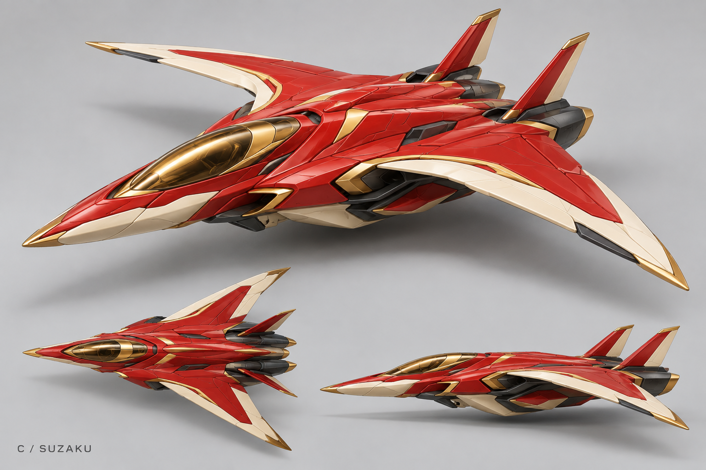
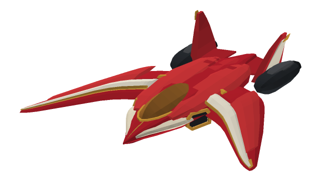
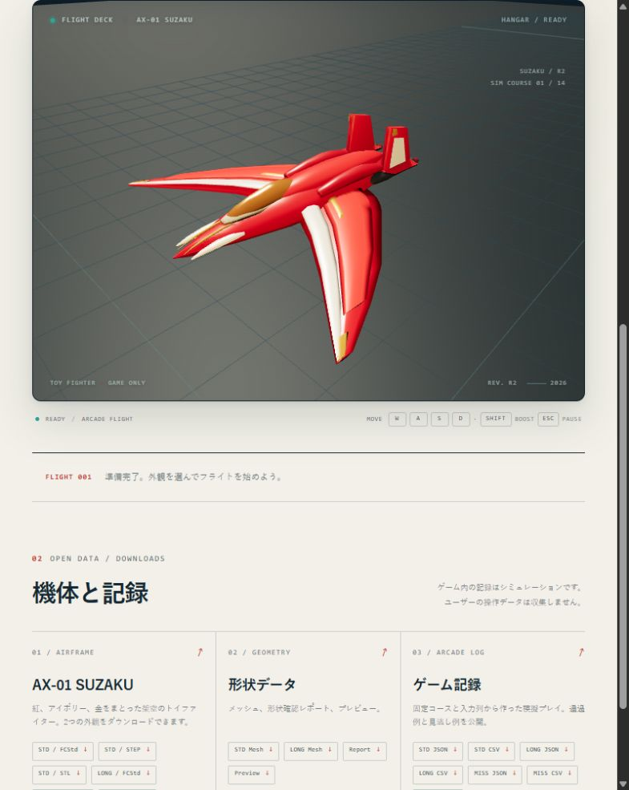
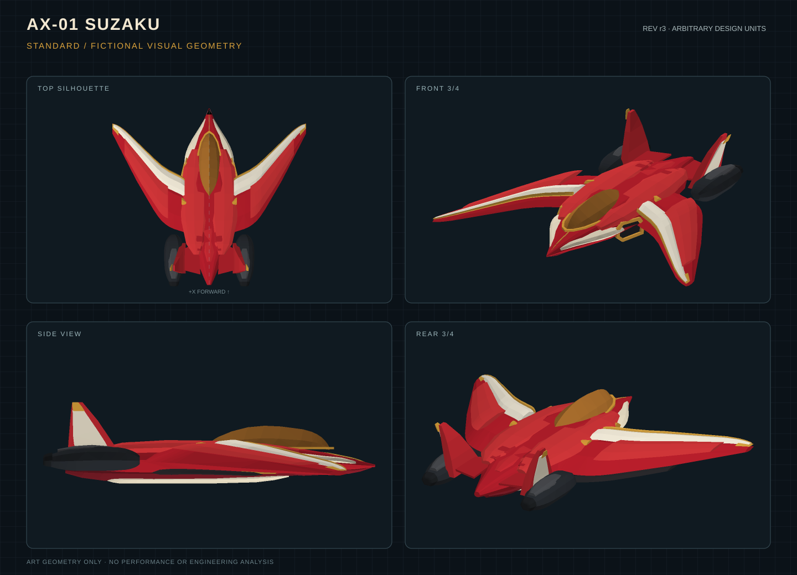

<!doctype html><html lang="ja"><meta charset="utf-8"><meta name="viewport" content="width=device-width,initial-scale=1"><title>SUZAKU concept comparison</title><style>*{box-sizing:border-box}body{margin:0;background:#ece9e3;color:#231e1a;font:16px system-ui}main{max-width:1400px;margin:auto;padding:32px}h1{font-size:24px;font-weight:600}p{color:#665d54}section{display:grid;grid-template-columns:1fr 1fr;gap:20px}figure{margin:0;background:#f7f5f0;border:1px solid #c6bdb1;border-radius:6px;overflow:hidden}figcaption{padding:14px 18px;font-size:14px;line-height:1.6}img{width:100%;display:block}section figure{background:#d4d3d1}section img{height:400px;object-fit:contain}section figure:first-child img{object-fit:cover;object-position:center top}aside{margin-top:20px;display:grid;grid-template-columns:1fr 1fr;gap:20px}aside img{max-height:420px;object-fit:contain}@media(max-width:700px){section,aside{grid-template-columns:1fr}main{padding:16px}}</style><main><h1>AX-01 SUZAKU / C案との比較</h1><p>左は選択されたコンセプト画像、右は修正後のFreeCADメッシュを描画した画像です。</p><section><figure><figcaption>選択されたC案 / 画像生成による視覚資料</figcaption></figure><figure><figcaption>r3 CAD / 実メッシュを深度バッファで描画</figcaption></figure></section><aside><figure><figcaption>修正前 r2 / ユーザーが類似性を不十分と判断</figcaption></figure><figure><figcaption>r3 / 同じメッシュから作ったCAD複数方向プレビュー</figcaption></figure></aside></main></html>